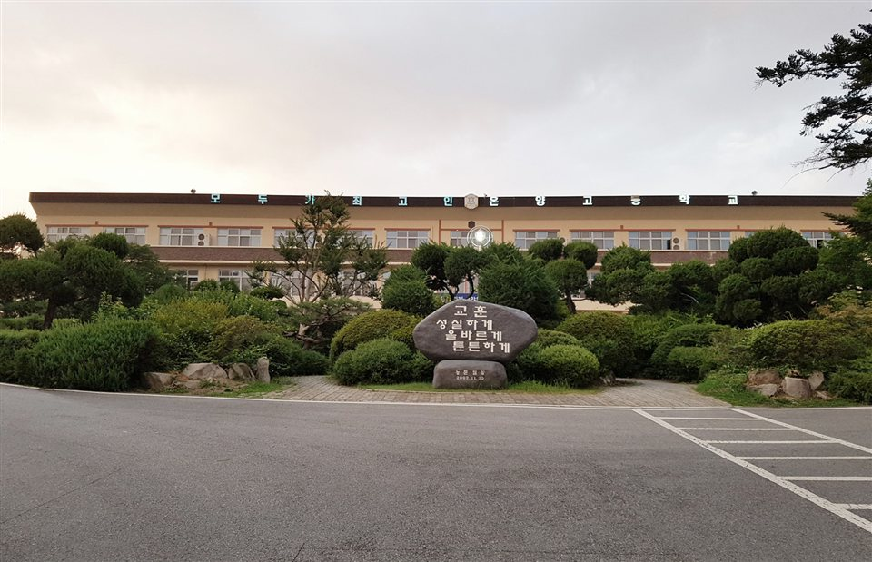

충남 아산은 관리 중인 학교가 90곳입니다. 고등학교가 12곳, 중학교가 24곳이고, 온양고등학교·아산고등학교·배방고등학교·설화고등학교·온양여자고등학교 같은 고등학교와 온양중학교·아산배방중학교·모종중학교 같은 중학교가 시 안에 넓게 흩어져 있습니다. 온양 원도심과 배방·탕정 신도시는 학교도 진도도 따로 돌아가서, 학원 반 시간표가 맞지 않는 학생은 집으로 오는 1:1 영어과외나 수학과외를 따로 찾게 됩니다.
오늘은 충남 아산으로 직접 찾아가는 선생님 4명 중 두 분을 소개합니다. 한 분은 중고등 영어를 회화부터 수능까지 보는 선생님, 한 분은 초등부터 고등 수학을 단계로 올리는 선생님입니다. 두 분 모두 방문과 화상 수업이 가능합니다.
온천동·모종동 쪽에서 고등 영어과외로 내신과 수능을 함께 준비하고 싶을 때 맞는 선생님입니다. 중학교 2·3학년과 고등학교 1·2학년 영어를 보고, 회화 수업도 함께 진행합니다. 단어를 늘리는 방식보다 글의 구조와 맥락을 읽는 힘을 먼저 잡는 쪽이라, 지문이 길어지면서 성적이 흔들린 학생에게 맞습니다.
수업 전에 문해력을 먼저 확인하고, 학생이 어디서 막히는지를 짚어 그 부분을 보완하는 순서로 진행합니다. 영어를 과목이 아니라 읽고 말하는 언어로 다루면서 흥미를 끌어올리고, 목표를 정해 하나씩 달성하게 하는 방식으로 이끕니다. 평일 저녁 늦은 시간과 토요일 낮 수업이 가능해, 학원 일정과 겹치는 학생도 시간을 맞추기 쉽습니다.
유ㅇ성 선생님 상세 프로필 →배방읍 쪽에서 중등 수학과외나 고등 수학을 방문으로 받고 싶을 때 맞는 선생님입니다. 기초 개념 → 유형 → 심화 → 실전까지 단계를 나눠 올리고, 학생의 이해 속도에 맞춰 난이도를 조절합니다. 진도를 빼는 것보다 지금 학생이 서 있는 칸을 정확히 잡는 데서 시작합니다.
수업은 개념 정리 → 기출 유형 분석 → 단원별 어려운 문제 집중 → 실전 문제풀이와 시간 관리 → 오답 분석 순서로 돌아갑니다. 기출과 서술형을 따로 모아 연습시키기 때문에, 답은 맞는데 풀이 과정에서 점수를 잃는 학생에게 특히 도움이 됩니다. 풀이를 더 빨리 쓰게 하기보다 문제에 접근하는 방식 자체를 바꾸는 쪽에 무게를 둡니다.
유ㅇ정 선생님 상세 프로필 →학교마다 진도와 시험 범위가 달라서, 학교별로 준비법을 따로 정리해 두었습니다.
👉 아산 영어과외 선생님 · 아산 수학과외 선생님 · 관리 학교 90곳 전체 보기